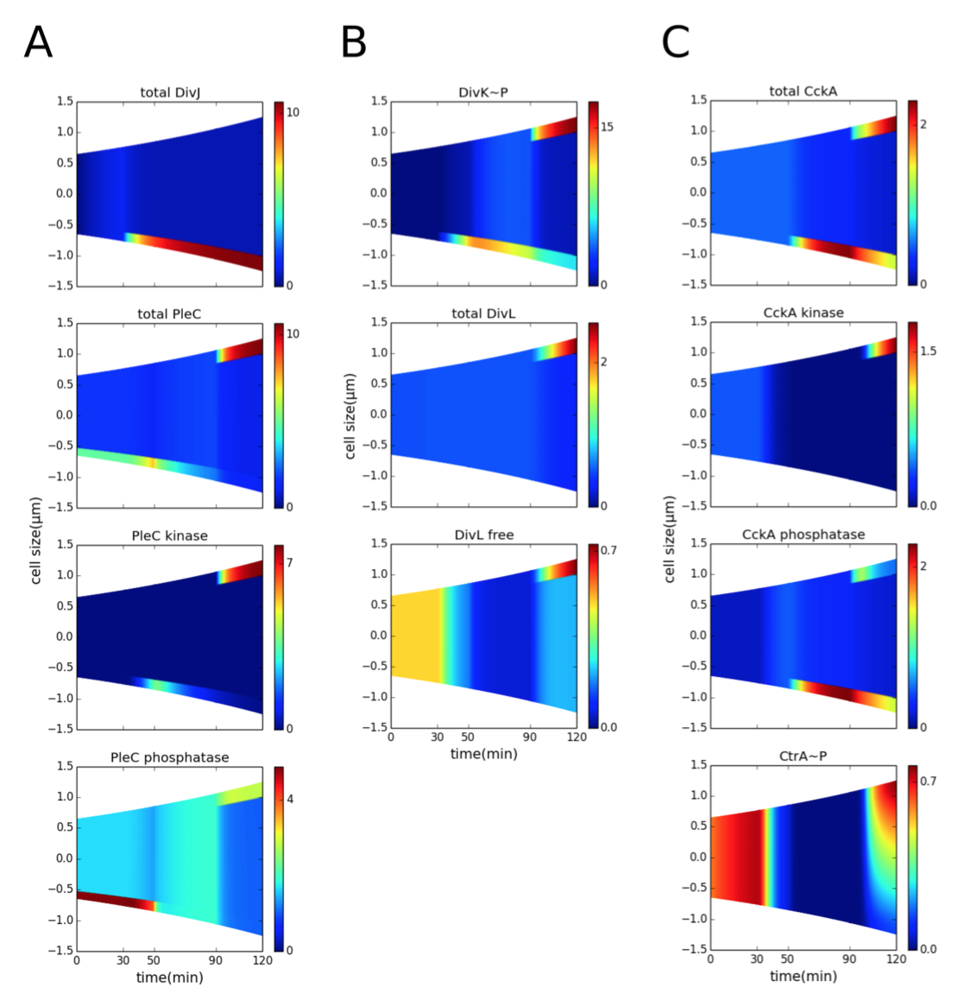
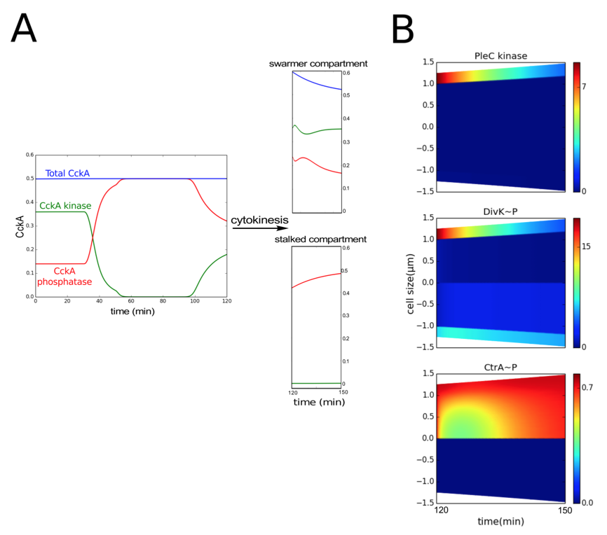
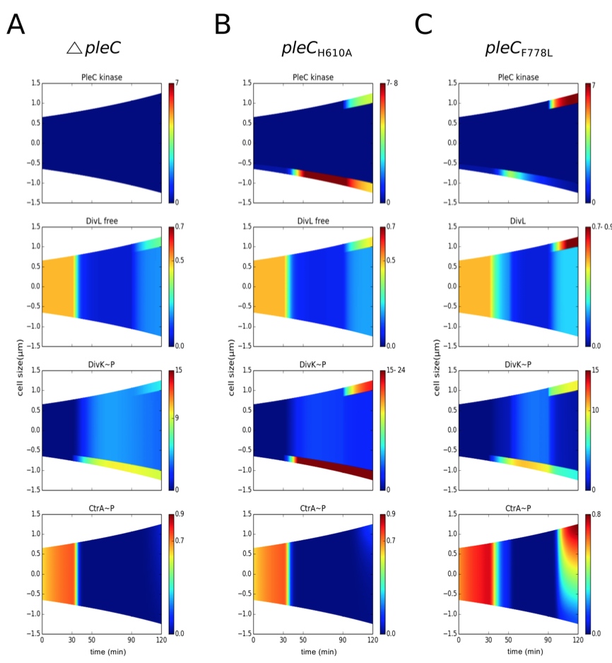
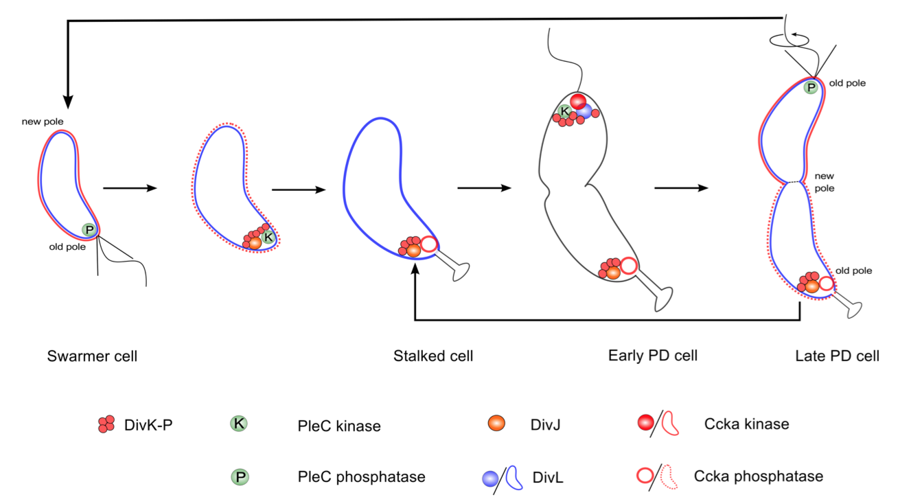

1. Rapid diffusion of DivK indicates that PleC is a kinase in the predivisional cell. PleC kinase can sequester inhibitor DivK~P from DivL

Figure 3.3: Co-localization of PleC kinase and DivL in the early predivisional cell is required for DivL reactivation. Spatiotemporal distributions of proteins during the cell cycle (prior to cytokinesis). Color indicates concentration gradients from minimum (blue) to maximum (red). (A) DivJ is localized at the old pole (t = 30-120 min). The location of PleC is shifted from the old pole (t = 0-50 min) to the new pole of the predivisional cell (t = 90-150 min). Following DivJ localization, the function of PleC changes from a phosphatase to a kinase. (B) Upon phosphorylation, DivK localizes to the poles of the cell. Despite the presence of DivK~P at the new pole of the predivisional cell, DivL is present in the free form (unbound to DivK~P) because DivL co-localizes with PleC kinase and PleC kinase sequesters DivK~P, preventing it from binding to DivL. (C) CckA is uniformly distributed in the swarmer stage and localized at both poles in the predivisional stage. Reactivation of DivL at the new pole results in new-pole CckA becoming a kinase, while old-pole CckA remains a phosphatase. Consequently, the late predivisional cell establishes a gradient of CtrA~P along its length from high at the new pole to low at the old pole.
2. The inhibitor-sequestration model reproduces replicative asymmetry in the early predivisional cell and swarmer pole development in the late predivisional cell

Figure 3.4: Following cytokinesis, PleC reverts to the phosphatase form. (A) The total concentration of CckA (blue curve) remains constant during the cell cycle. However, the proportions of phosphatase (red curve) and kinase (green curve) forms of CckA change for each stage of the cell cycle. After cytokinesis (compartmentalization), the concentrations of kinase and phosphatase fraction of CckA in the swarmer and stalked compartments (t = 120-150 min) are similar to their concentration in the non-compartmentalized swarmer (t = 0-30 min) and stalked cell stages (t = 30-90 min) respectively. (B) Spatiotemporal distribution of PleC kinase, DivK~P and CtrA~P after compartmentalization (at t = 120 min). Color indicates concentration gradients from minimum (blue) to maximum (red).
3. Loss of asymmetry is a physiological consequence of mutations that alter the spatiotemporal profile of inhibitor sequestration

Figure 3.5: PleC kinase conformation is required to establish replicative asymmetry. Concentration gradients are color coded as in Figure 3.5. (A) In the pleC mutant, free active form of DivL is lower than in wild type, resulting in loss of predivisional cell CtrA~P. (B) In pleCH610A mutant cells (K-P-), an elevated level of DivK~P results in less active form of DivL and reduced CtrA~P. (C) In pleCF778L mutant cells (K-P+), inhibitor sequestration is retained, resulting in a normal CtrA~P gradient.
Proposed molecular mechanism to produce different developmental fates in Caulobacter

Figure 3.6: Localization and function of the DivK-PleC-DivK and DivL-CckA-CtrA signaling networks, as suggested by the model calculations reported here.
Figure 3.6 summarizes the localization and functional status of proteins, as proposed in our model. At the molecular level, the stalked cell is distinguished from the swarmer cell by the kinase DivJ, which localizes at the old pole and initiates the swarmer-to-stalked transition. Hence, DivJ can be considered as a cell fate determinant protein. However, there is no counterpart for DivJ that initiates the transition from stalked to predivisional cell. Instead, the cell recycles the same components-namely, DivJ-PleC-DivK and DivL-CckA-CtrA to program the predivisional stage of the cell cycle.
 webmaster
webmaster